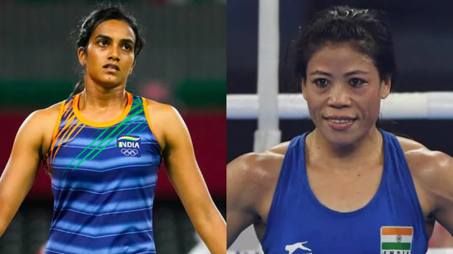
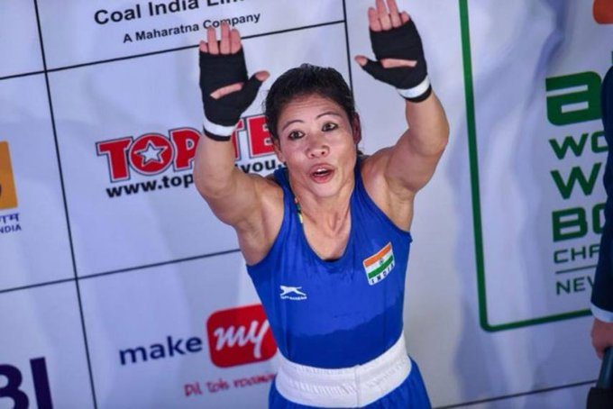

|  |
Tokyo 2020 Olympics from July 29: The Indian contingent had one of its best days in the Tokyo Olympics on Thursday with the likes of PV Sindhu, Atanu Das, Manu Bhaker and the men's hockey team keeping the country's medal hopes alive but the July 29 will always be remembered as the day boxing legend MC Mary Kom played the last Olympic match of her decorated career. |
|---|---|
|  |